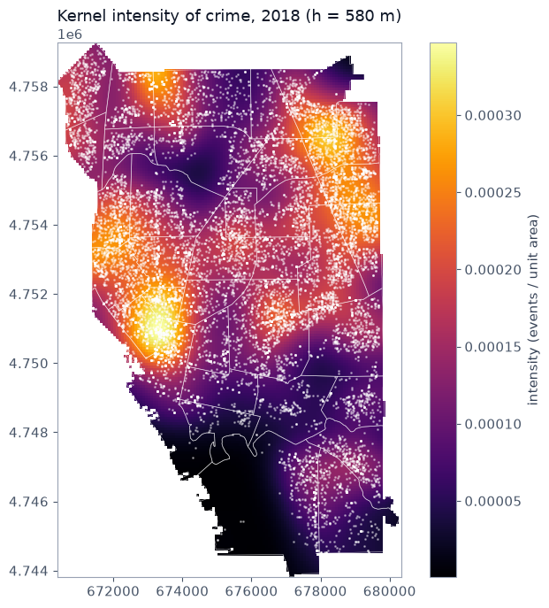
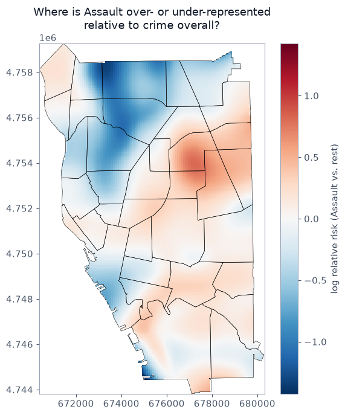
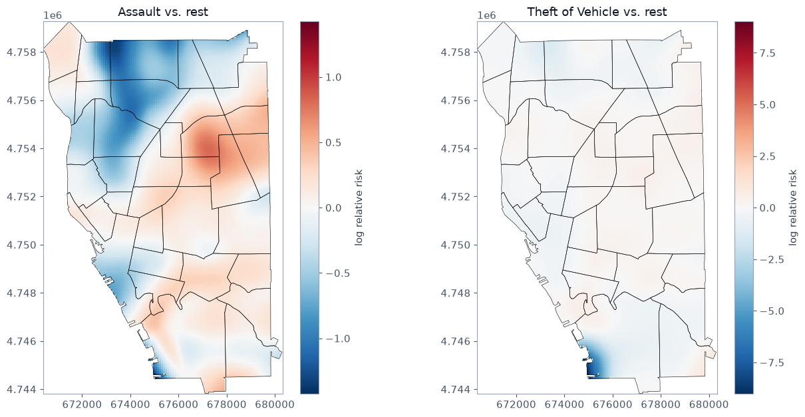

Estimating and mapping how event density varies across a study region: quadrat counts, kernel density estimation, bandwidth selection, and relative-risk surfaces. This notebook is Part 1: Point Pattern Analysis (Chapter 1.2 of 5). The worked example uses Buffalo crime incidents, 2018 (data/crime_data_2018.csv, data/buffalo_city.shp). The methods come from geolattice.spatial_statistics.pointpattern.
Overview
Chapter 1.1 established that Buffalo’s 2018 crime events are not uniformly spread across the city: a first, informal impression from comparing the real data to a simulated CSR pattern. This chapter makes that impression precise: it estimates the intensity function\(\lambda(\mathbf{s})\), the local density of events per unit area, two different ways, and formally tests whether a constant intensity (CSR) is consistent with the data at all.
Step
What we do
Theory
Define intensity; contrast binned (quadrat) and smooth (kernel) estimators
Quadrat test
Partition the city into cells; test observed counts against the Poisson counts CSR predicts
Kernel density
Estimate a smooth intensity surface with edge correction for the irregular city boundary
Bandwidth
Compare a rule-of-thumb bandwidth (Scott) against one chosen by cross-validation
Relative risk
Map where one crime type is over- or under-represented relative to crime overall
By the end you will have quantified how far Buffalo crime departs from CSR in intensity alone (before any question of event-to-event interaction, which is Chapter 1.3’s job), and produced maps a crime analyst could actually use to prioritise areas.
the expected number of events per unit area at location \(\mathbf{s}\). Under CSR, \(\lambda(\mathbf{s}) = \lambda\) is a single constant, estimated by the crude global rate \(\hat\lambda = n / |W|\) (Chapter 1.1’s pp.intensity). This chapter asks a sharper question: does \(\lambda\) vary over \(\mathbf{s}\), and if so, how?
Two estimation strategies, with different strengths:
Approach
Idea
Good for
Quadrat counts
Partition \(W\) into cells; compare observed counts to what a constant \(\lambda\) predicts
A formal test of CSR (a single p-value); simple, transparent
Kernel density
Smooth each event into a small “bump” of probability mass and sum the bumps
A continuous map of \(\hat\lambda(\mathbf{s})\); better for visual and comparative work
They answer the same underlying question at different resolutions: quadrat counts summarise intensity variation into one test statistic, kernel density spreads it into a full surface. Both are used below, and both point to the same conclusion.
Estimating Intensity: Two Approaches
The quadrat-count test of CSR
Divide the bounding box of \(W\) into an \(n_x \times n_y\) grid of cells. Under CSR, the count in cell \(c\) is
so the expected count is \(E_c = n \cdot |c \cap W| / |W|\): proportional to the area of the cell that actually lies inside the window, which matters for a city boundary as irregular as Buffalo’s. The Pearson chi-square statistic
(with \(k\) the number of cells with \(E_c > 0\)) tests departure from a constant intensity. A companion statistic, the index of dispersion\(\text{IoD} = s^2_O / \bar{O}\) (variance over mean of the cell counts), is 1 under CSR, greater than 1 for clustered/overdispersed patterns, and less than 1 for regular ones: informal, but intuitive, and does not depend on the \(\chi^2\) approximation holding.
The chi-square approximation degrades when expected counts are small (a common rule of thumb: at least 80% of cells should have \(E_c \geq 5\)). quadrat_test also offers a Monte Carlo p-value (permutations=), drawing count vectors from the multinomial distribution implied by CSR: valid regardless of cell size.
Kernel density estimation
The kernel estimator replaces each event with a small bump of mass and sums them:
where \(k\) is a kernel function (Gaussian, or the compact Epanechnikov kernel) and \(h\) the bandwidth. This package implements \(k\) as a product (separable) kernel, \(k(\mathbf{u}) = k_1(u_x)\,k_1(u_y)\), which makes the computation an efficient matrix product rather than an \(O(n \times n_{\text{grid}}^2)\) loop.
Bandwidth selection
\(h\) controls a bias-variance trade-off: small \(h\) tracks individual events closely (low bias, high variance, a speckled, noisy surface); large \(h\) averages over a wide area (low variance, high bias: a smooth surface that can wash out genuine local structure). Two choices are compared below:
Scott’s rule of thumb: \(h = \hat\sigma \cdot n^{-1/6}\), with \(\hat\sigma\) the mean coordinate standard deviation: fast, data-driven only through the pattern’s overall spread, and typically oversmooths clustered spatial data (it was derived for roughly Gaussian-shaped densities, not point-process clusters).
Likelihood cross-validation: choose \(h\) to maximise the leave-one-out log-likelihood \(\sum_i \log \hat\lambda_{-i}(\mathbf{s}_i)\): adapts to the data, but is well known to undersmooth clustered patterns (it keeps shrinking \(h\) to fit the tightest local clusters more closely).
Section 8 shows both are visibly biased in opposite directions here, which is itself the practical lesson: neither is a substitute for looking at the map.
Edge correction
Near the window boundary, a naive kernel estimate is biased low: part of the kernel’s mass would fall outside \(W\) (where there could not possibly have been an event), so the sum under-counts. kde(..., edge_correction=True) divides by the fraction of kernel mass that actually lands inside \(W\) (the “uniform” or Jones correction), which is exact for any window shape, not just rectangles: important for Buffalo’s non-convex boundary (Chapter 1.1, Section 10).
Locate the repository root, import the spatial-statistics helpers, and point DATA at the example files.
Installation. This notebook needs installation option 3 (core, spatial analysis and spatial statistics): pip install "geolattice[statistics]". See “Installation options” in the GeoLattice README.
Code
import sysfrom pathlib import Pathimport numpy as npimport pandas as pdimport geopandas as gpdimport matplotlib.pyplot as pltfrom IPython.display import Markdown, displayROOT = Path.cwd().resolve()for candidate in [ROOT, *ROOT.parents]:if (candidate /"pyproject.toml").is_file() and (candidate /"Data").is_dir(): ROOT = candidatebreakelse:raiseFileNotFoundError("Could not find the GeoLattice repository root.")sys.path.insert(0, str(ROOT))DATA = ROOT /"Data"/"00_shared"/"data_spatial_stat"import geolattice.spatial_statisticsfrom geolattice.viz import apply_map_stylefrom geolattice.spatial_statistics.pointpattern import Window, PointPattern, quadrat_test, kde, bandwidth_scott, bandwidth_cv, relative_riskapply_map_style()C = {"blue": "#2b6cb0", "red": "#c0392b", "green": "#2f855a", "orange": "#dd6b20","grey": "#718096", "purple": "#6b46c1", "teal": "#2c7a7b"}print(f"geolattice.spatial_statistics : version {geolattice.spatial_statistics.__version__}")print(f"data folder : {DATA.relative_to(ROOT)}/")
geolattice.spatial_statistics : version 0.3.49
data folder : Data/00_shared/data_spatial_stat/
Rebuild the Point Pattern
Chapter 1.1 diagnosed a coordinate reference system error in the source shapefiles (declared UTM zone 11N; Buffalo is in zone 17N) and fixed it by reprojecting through longitude/latitude to EPSG:26917. We repeat that short, corrected build here so this notebook is self-contained; see Chapter 1.1 for the full diagnosis.
PointPattern(n=13948, intensity=0.0001318, window=Window(polygon, area=1.0583e+08, bounds=(670377.394, 4743812.67, 680296.782, 4759265.808)))
global (crude) intensity : 131.80 events / km²
Quadrat Analysis of Crime Intensity
We start with an \(8 \times 8\) grid over the city and a Monte Carlo p-value (199 multinomial simulations) alongside the analytical \(\chi^2\) approximation.
Code
qd = quadrat_test(pp_all, nx=8, ny=8, permutations=199, seed=1)print(qd.summary())p_analytic ="< 0.0001"if qd["p_value"] <1e-4elsef"= {qd['p_value']:.4f}"display(Markdown(f"**Index of dispersion = {qd['index_of_dispersion']:.1f}**: the variance of cell counts is "f"{qd['index_of_dispersion']:.0f} times the mean. Under CSR this ratio would be 1. Both the analytical "f"$\\chi^2$ test (p {p_analytic}) and the Monte Carlo test (p = {qd['p_mc']:.3f}, the smallest value 199 ""permutations can report) reject CSR decisively."))
Index of dispersion = 166.9: the variance of cell counts is 167 times the mean. Under CSR this ratio would be 1. Both the analytical \(\chi^2\) test (p < 0.0001) and the Monte Carlo test (p = 0.005, the smallest value 199 permutations can report) reject CSR decisively.
The chi-square approximation needs expected counts that are not too small. We check a range of grid resolutions, reporting the minimum expected count per cell (min_expected) alongside the index of dispersion, so the trade-off is visible rather than assumed.
The index of dispersion falls as cells get smaller: expected, since a very fine grid starts to bump into genuinely unpopulated cells (parks, industrial land, the river) that shrink the variance contributed by “real” crime hot spots relative to zero-count cells everywhere. min_expected also falls well below the conventional rule-of-thumb of 5 once the grid is finer than about \(8\times 8\), so the \(\chi^2\) approximation (not the Monte Carlo p-value, which stays valid) becomes questionable there. Every resolution still shows overdispersion far beyond anything CSR would produce: the qualitative conclusion is robust even where the exact chi-square p-value is not.
Kernel Density Estimation of Crime Intensity
kde returns a KDEResult holding the surface on a regular grid, scaled so it integrates to (approximately) the event count \(n\): a useful sanity check on any kernel implementation.
Scott's-rule bandwidth : 580 m
grid : 129 x 200 cells
integral of density : 14160 (n = 13,948; +1.5%: discretisation/edge-correction error)

Bandwidth Selection in Practice
bandwidth_cv maximises leave-one-out likelihood over a geometric grid of candidate bandwidths (subsampling large patterns for speed: the default cap is 5,000 events, comfortably above what is needed to locate the optimum). We compare it against Scott’s rule.
The contrast is exactly what the theory in Section 3.3 predicts: the cross-validation bandwidth resolves many small, distinct hot spots: plausibly true local structure, but also plausibly some noise, since likelihood CV is known to undersmooth clustered spatial patterns; Scott’s rule washes almost everything into two or three broad regions, useful for a citywide overview but too coarse to act on locally. Neither is automatically “right”: the geometric midpoint is shown only as a visual compromise, not a principled recommendation. In practice, report the bandwidth used, and show at least two to let the reader judge: exactly as this section does.
Relative Risk: Comparing Crime Types
A map of where crime happens is dominated by where people and property are. A sharper operational question is: where is one crime type over-represented relative to crime overall?relative_risk(cases, controls) answers this with the ratio of two kernel density estimates: cases (e.g. Assault) against controls (every other incident type): so that areas with generally high crime no longer automatically dominate the map.
Code
assault = pp_all.by_mark("Assault")other = pp_all.subset(pp_all.marks !="Assault")print(f"Assault (cases) : n = {assault.n:,}")print(f"other crime (control): n = {other.n:,}")rr = relative_risk(assault, other, bandwidth="scott", grid_size=180, log=True)fig, ax = plt.subplots(figsize=(7.5, 7))vmax = np.nanmax(np.abs(rr.density))im = ax.imshow(rr.density, origin="lower", extent=rr.extent, cmap="RdBu_r", vmin=-vmax, vmax=vmax)plt.colorbar(im, ax=ax, fraction=0.046, pad=0.04, label="log relative risk (Assault vs. rest)")city_fixed.boundary.plot(ax=ax, color="k", lw=0.4)ax.set_aspect("equal")ax.set_title("Where is Assault over- or under-represented\nrelative to crime overall?")plt.tight_layout(); plt.show()print(f"log relative risk range: [{np.nanmin(rr.density):.2f}, {np.nanmax(rr.density):.2f}]")print("positive (red) = Assault more common here than the citywide mix would predict;"" negative (blue) = less common")
Assault (cases) : n = 2,765
other crime (control): n = 11,183

log relative risk range: [-1.42, 0.81]
positive (red) = Assault more common here than the citywide mix would predict; negative (blue) = less common
Repeating this for a second type shows the surfaces genuinely differ by crime type, not just by population density (which would make every relative-risk map look the same).
Code
tov = pp_all.by_mark("Theft of Vehicle")other_tov = pp_all.subset(pp_all.marks !="Theft of Vehicle")rr_tov = relative_risk(tov, other_tov, bandwidth="scott", grid_size=180, log=True)fig, axes = plt.subplots(1, 2, figsize=(14, 6.4))for ax, r, title inzip(axes, [rr, rr_tov], ["Assault vs. rest", "Theft of Vehicle vs. rest"]): vmax = np.nanmax(np.abs(r.density)) im = ax.imshow(r.density, origin="lower", extent=r.extent, cmap="RdBu_r", vmin=-vmax, vmax=vmax) plt.colorbar(im, ax=ax, fraction=0.046, pad=0.04, label="log relative risk") city_fixed.boundary.plot(ax=ax, color="k", lw=0.4) ax.set_aspect("equal"); ax.set_title(title)plt.tight_layout(); plt.show()corr = np.corrcoef(np.nan_to_num(rr.density.ravel()), np.nan_to_num(rr_tov.density.ravel()))[0, 1]print(f"correlation between the two log-relative-risk surfaces: {corr:.3f} ""(well short of 1: these are genuinely different spatial patterns, not both just 'more crime')")

correlation between the two log-relative-risk surfaces: 0.298 (well short of 1: these are genuinely different spatial patterns, not both just 'more crime')
Summary and Conclusions
What we did
Defined the intensity function \(\lambda(\mathbf{s})\) and contrasted quadrat (binned, test-oriented) and kernel (smooth, mapping-oriented) estimation.
Ran the quadrat-count test at \(8\times 8\) resolution: index of dispersion far above 1, and both the analytical and Monte Carlo tests reject CSR decisively: confirming Chapter 1.1’s visual impression.
Checked sensitivity to grid resolution and flagged where the chi-square approximation becomes unreliable (small expected counts), while noting the qualitative conclusion (overdispersion) is robust throughout.
Estimated a kernel intensity surface with the package’s uniform edge correction, and checked its integral against the known event count.
Compared Scott’s-rule and cross-validation bandwidths, and showed they disagree by roughly a factor of four here, in the direction theory predicts (CV undersmooths, Scott’s rule oversmooths).
Mapped relative risk for two crime types against the rest of crime, showing that “risk relative to the local baseline” is a different, and more actionable, map than raw density.
Practical takeaways
A significant quadrat test does not say where intensity is elevated, only that it is: kernel density is the complementary tool for that.
Bandwidth choice is not a detail: the same data can look like two dozen hot spots or two broad regions depending on \(h\) alone. Report the bandwidth, and show more than one.
A crime-type map that just reproduces the overall crime density map is not telling you anything new about that crime type: relative risk strips out the shared background.
None of this chapter’s methods use information about interaction between events (do assaults cluster near other assaults, beyond what the intensity surface predicts?): that is Chapter 1.3’s second-order question, logically separate from everything estimated here.
Next steps
Chapter 1.3 (Second-order and Distance-based Summary Functions) takes the interaction question head on: nearest-neighbour statistics, Ripley’s K and L, and the pair correlation function, all of which ask whether events are closer together (or farther apart) than their intensity alone would predict.
Further reading
Textbooks
Reference
Notes
Baddeley, A., Rubak, E. & Turner, R. (2015). Spatial Point Patterns: Methodology and Applications with R. CRC Press.
Chapters 6-7: quadrat counts and kernel intensity estimation
Silverman, B. W. (1986). Density Estimation for Statistics and Data Analysis. Chapman & Hall.
The classical reference on kernel density estimation and bandwidth selection
Diggle, P. J. (2013). Statistical Analysis of Spatial and Spatio-Temporal Point Patterns (3rd ed.). CRC Press.
Intensity estimation and relative risk (Ch. 4, 9)
Wand, M. P. & Jones, M. C. (1995). Kernel Smoothing. Chapman & Hall.
Edge correction and bandwidth selection in depth
Key papers
Paper
Contribution
Diggle, P. J. (1985). A kernel method for smoothing point process data. Applied Statistics, 34, 138-147.
Origin of kernel intensity estimation for point patterns
Scott, D. W. (1992). Multivariate Density Estimation. Wiley.
Scott’s rule-of-thumb bandwidth
Kelsall, J. E. & Diggle, P. J. (1995). Non-parametric estimation of spatial variation in relative risk. Statistics in Medicine, 14, 2335-2342.
The relative-risk (case/control density ratio) method used in Section 9